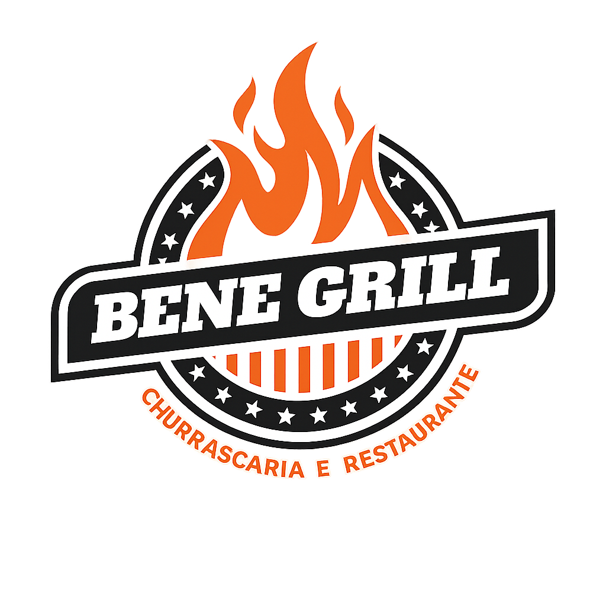

Voltar ao siteUma trajetória construída com batalhas.
Tudo começou na década de 90, quando Benedito Maranhão Neto, ao lado de sua esposa Jaci Gomes Alves Maranhão e seus filhos, deixou Pernambuco em busca de uma vida melhor em Camaçari. Com poucos recursos, mas muita determinação, nasceu a Bodega do Maranhão, um pequeno comércio que, além de produtos simples, oferecia algo essencial: acolhimento e proximidade com cada cliente.
O início foi marcado pelo planejamento, esforço e construção de um propósito claro: trabalhar com dedicação e oferecer sempre o melhor atendimento. Mesmo com uma rotina intensa — começando às 5h da manhã e indo até a noite — foi nesse período que surgiram os valores que sustentam o negócio até hoje.
Foi na primeira unidade que tudo ganhou forma. A bodega evoluiu aos poucos, passando por transformações importantes: de pequeno comércio para bar, depois mercadinho e, gradualmente, entrando no ramo alimentício. Esse espaço foi fundamental para a construção da identidade do que viria a se tornar o Bene Grill.
Ao longo de mais de 30 anos, o empreendimento cresceu junto com a confiança dos clientes, passando por diferentes fases: • Bodega do Maranhão • Bar e Mercearia Maranhão • Bar do Bené • Boteco do Bené • Bene Grill Churrascaria e Restaurante Sempre guiado por princípios fortes: “O cliente é nosso maior patrimônio.” “Nunca perca a primeira venda.” “Atender bem é o caminho para crescer.” Com isso, o negócio se tornou uma referência na cidade.
Em 2020, o Sr. Benedito passou o bastão para a nova geração, que assumiu a missão de continuar esse legado. Atualmente, o Bene Grill vive um novo momento com a construção de sua nova sede — um espaço mais amplo, moderno e preparado para receber ainda melhor seus clientes. E o objetivo continua o mesmo: crescer cada vez mais, evoluir constantemente e manter viva a essência que trouxe o restaurante até aqui. 🔥 Atendimento de verdade 🔥 Comida de qualidade 🔥 Respeito por cada cliente O Bene Grill é mais do que um restaurante — é história, família e tradição todos os dias..